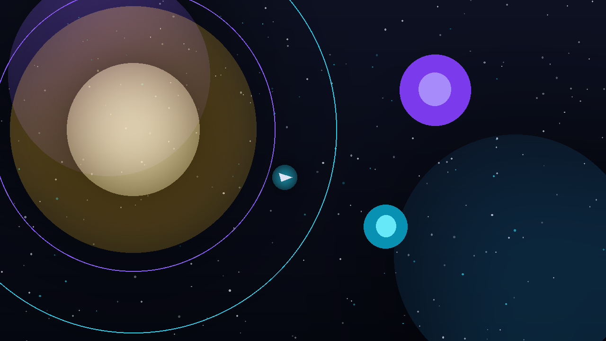

← все игры

SLINGOR.IO
Реальное время, космические пращи: облетай планеты, набирай скорость и забирай чужие ядра. Физика считается на сервере — читерить бесполезно.
Как играть
- Праща — обогни планету на скорости и получи разгон ×1.35 вместе с очками.
- Цепь пращ — ещё одна праща за 6 секунд поднимает множитель до ×5.
- Ядра — собирай; после гибели груз падает контейнером и через 26 секунд исчезает.
- Бонусы — щит отражает удар, буст удваивает тягу, магнит тянет ядра.
- Столкновение с планетой — смерть. Контры копятся на орбитальном разгоне.
Управление
| Действие | Клавиши |
|---|---|
| Тяга вперёд | W / ↑ |
| Тормоз | S / ↓ |
| Поворот | A D / ← → |
| Буст | Shift |
Техническая часть
- Сервер —
FastAPI + WebSocket: симуляция комнат по 30 Гц, раздача состояния ~16 раз в секунду. - Физика — чистая и детерминированная: принимает
dt, не трогает wall-clock и глобальный random. - Боты используют тот же вход
Player.input, что и люди, и добивают комнату до толпы. - Анти-абуз: rate limit, flood guard, отбраковка больших фреймов, таймаут молчащего сокета.
- 48 тестов: детерминированная физика, ИИ ботов, REST + WebSocket.
Симуляция: 30 Гц, сервер-авторитативная Раздача: ~16 Гц + мгновенные события Тесты: 48 (physics / ai / api) Клиент: немое вью — рендер, ввод, звук
Подробнее в блоге: SLINGOR.IO 1.4: мультиплеер на гравитационных пращах